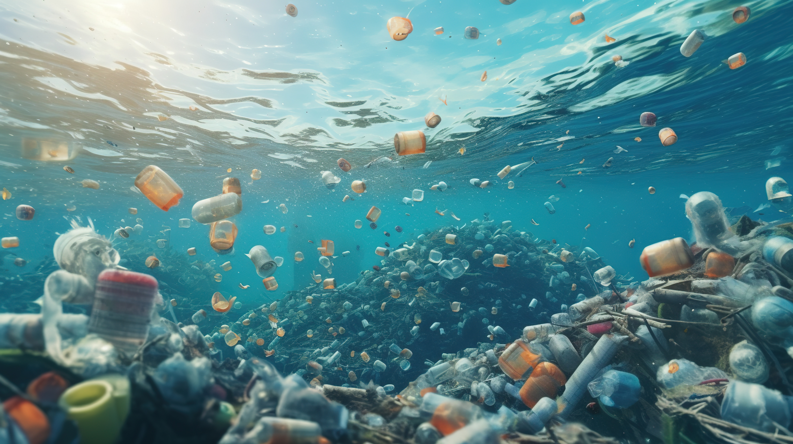
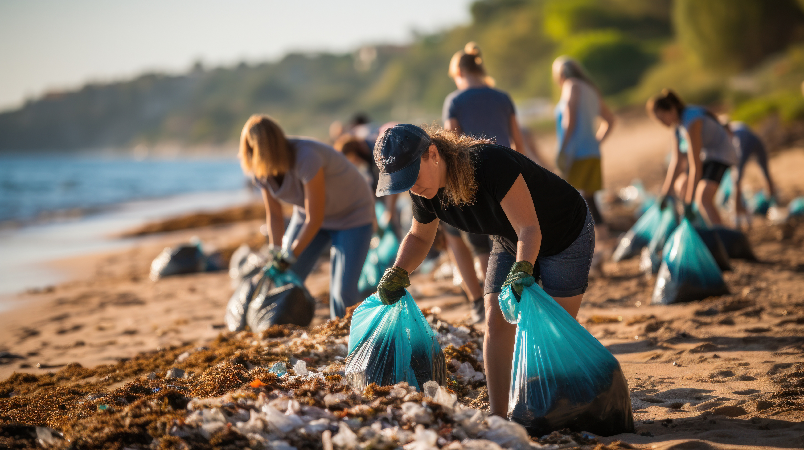

Marine Pollution
Understanding its causes, effects, and solutions for a healthier ocean and a sustainable future for all.
Introduction
Marine pollution is a critical issue affecting the health of our oceans. From plastic waste to oil spills, human activities continue to disrupt aquatic ecosystems, endangering marine life and coastal communities. The buildup of contaminants not only threatens biodiversity but also impacts the global climate, fisheries, and economies that depend on clean and vibrant marine habitats.
Our oceans cover over 70% of the Earth's surface, making them vital for regulating climate, supporting countless species, and providing livelihoods for millions of people. Protecting our marine environment is essential for food security, weather stability, and the overall health of our planet.
Causes of Marine Pollution
- Plastic Waste: Millions of tons of plastic, including single-use items and microplastics, enter oceans yearly.
- Oil Spills: Accidents in drilling and transportation pollute the water with harmful hydrocarbons.
- Chemical Contaminants: Industrial chemicals and heavy metals can build up in aquatic ecosystems.
- Sewage & Wastewater: Untreated or poorly treated waste disrupts marine life and water quality.
Rapid urbanization and poor waste management systems amplify these challenges, making consistent monitoring and international cooperation crucial for mitigating the sources of marine pollution.

Effects of Marine Pollution
- Harm to Marine Life: Animals ingest plastic or become entangled in it, leading to injuries or fatalities.
- Contaminated Seafood: Toxic chemicals and microplastics enter the food chain, eventually reaching human consumers.
- Coral Reef Destruction: Pollutants and climate change stressors lead to coral bleaching and habitat loss.
- Economic Losses: Coastal tourism, fishing, and other marine-based industries suffer from degraded environments.
These effects cascade through entire ecosystems, disrupting the balance of marine habitats that have been stable for millions of years. As coral reefs die and fish populations decline, communities relying on these resources face both immediate and long-term socio-economic challenges.

Solutions to Combat Marine Pollution
- Reduce plastic use and promote biodegradable alternatives.
- Strengthen waste management and recycling programs globally.
- Support businesses and products that prioritize sustainability.
- Encourage stricter environmental policies and enforcement.
Tackling marine pollution requires a cooperative effort from individuals, industries, and governments. By adopting more responsible consumption patterns, improving recycling infrastructures, and supporting scientific research, we can guide our planet towards a cleaner future.
How to Help
Every person can play a part in reducing marine pollution. Here are some everyday actions you can take:
- Participate in Cleanups: Join local or national beach cleanup drives.
- Conserve Water: Reducing household water usage lessens the load on sewage treatment.
- Choose Sustainable Seafood: Opt for seafood certified by reputable organizations.
- Raise Awareness: Share information about marine conservation with friends and family.
By taking small steps, we collectively move towards a healthier marine ecosystem, ensuring oceans remain vibrant and life-sustaining for generations to come.